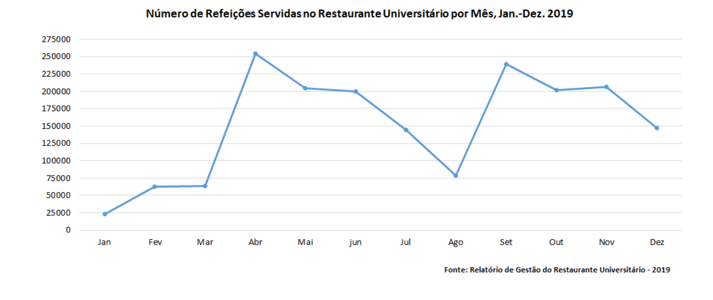
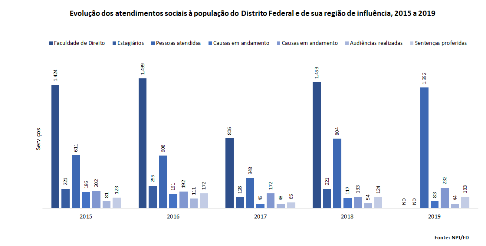

Capítulo 9 Atividades Comunitárias
Faça o download de todas as tabelas desta seção:Download atividades_comunitarias.xlsx
9.1 Decanato de Assuntos Comunitários (DAC)
9.1.1 Evolução da assistência estudantil, 2015 a 2019
| Indicadores | 2015 | 2016 | 2017 | 2018 | 2019 |
|---|---|---|---|---|---|
| Bolsa-Alimentação: Nro. refeições subsidiadas para estudantes carentes (RU) | 487.006 | 569.948 | 588.549 | 645.253 | 687.805 |
| Auxílio-Alimentação/Bolsa-Alimentação - Beneficiários | 4.816 | 5.391 | 6.439 | 5.362 | 6.455 |
| Auxílio Socioeconômico/Bolsa Permanência - Beneficiários | 2.432 | 2.964 | 3.359 | 3.295 | 3.176 |
| Auxílios Emergenciais pagos | 333 | 281 | 325 | 214 | 178 |
| Vale-Livros Concedidos | 365 | 405 | 281 | 115 | 324 |
| Moradia Estudantil da Graduação - Beneficiários | 1.197 | 1.598 | 1.888 | 1.449 | 2.094 |
| Moradia Estudantil da Pós-Graduação - Vagas em apartamentos | 72 | 72 | 72 | 72 | 72 |
| Moradia Estudantil da Pós-Graduação - Novos estudantes atendidos (por vagas abertas) | 34 | 45 | 38 | 33 | 37 |
| Fonte: DDS/DAC | |||||
9.1.2 Atividades e serviços ofertados à comunidade universitária, 2019
| Unidade | Descrição | Nº de pessoas | Nº de Atendimentos |
|---|---|---|---|
| Coordenação de Atenção Psicossocial (Coap) Agosto a Novembro/2019 | Nutrir-se | 8 | 47 |
| Coordenação de Atenção Psicossocial (Coap) Agosto a Novembro/2019 | Hiperdia | 109 | 109 |
| Coordenação de Atenção Psicossocial (Coap) Agosto a Novembro/2019 | Ações de Saúde | 79 | 79 |
| Coordenação de Atenção Psicossocial (Coap) Agosto a Novembro/2019 | Oficina de Relacionamento Interpessoal (Semana Universitária) | 7 | 7 |
| Coordenação de Atenção Psicossocial (Coap) Agosto a Novembro/2019 | Programa Viva Mais! | 8 | 32 |
| Coordenação de Atenção Psicossocial (Coap) Agosto a Novembro/2019 | Clínica do Trabalho (Coletiva) | 17 | 35 |
| Coordenação de Atenção Psicossocial (Coap) Agosto a Novembro/2019 | Clínica do Trabalho (Individual) | 35 | 194 |
| Coordenação de Atenção Psicossocial (Coap) Agosto a Novembro/2019 | Intervenção em crise | 74 | 772 |
| Coordenação de Atenção Psicossocial (Coap) Agosto a Novembro/2019 | Acolhimento Psicossocial Individual | 173 | 264 |
| Coordenação de Atenção Psicossocial (Coap) Agosto a Novembro/2019 | Acolhimento Psicossocial Coletivo | 56 | 56 |
| Coordenação de Atenção Psicossocial (Coap) Agosto a Novembro/2019 | Falart | 6 | 18 |
| Coordenação de Atenção Psicossocial (Coap) Agosto a Novembro/2019 | Grupo de Escuta Universitária | 7 | 30 |
| Coordenação de Atenção Psicossocial (Coap) Agosto a Novembro/2019 | Atendimento psiquiátrico | 85 | 85 |
| Coordenação de Atenção Psicossocial (Coap) Agosto a Novembro/2019 | Visitas Institucionais, domiciliar e internação | 17 | 17 |
| Coordenação de Atenção Psicossocial (Coap) Agosto a Novembro/2019 | Acompanhamento/Monitoramento | 108 | 108 |
| Coordenação de Atenção Psicossocial (Coap) Agosto a Novembro/2019 | Atendimento a familiares | 12 | 12 |
| Coordenação de Articulação de Redes para Prevenção e Promoção da Saúde (Coredes) | Testagem e IST/HIV | 8.079 | 8.079 |
| Coordenação de Articulação de Redes para Prevenção e Promoção da Saúde (Coredes) | Terapia Comunitária (Gama, Ceilândia e Darcy ) | 640 | 640 |
| Coordenação de Articulação de Redes para Prevenção e Promoção da Saúde (Coredes) | Avaliação nutricional | 59 | 59 |
| Coordenação de Articulação de Redes para Prevenção e Promoção da Saúde (Coredes) | Orientação | 114 | 114 |
| Coordenação de Articulação de Redes para Prevenção e Promoção da Saúde (Coredes) | Acolhimento | 192 | 192 |
| Coordenação de Articulação de Redes para Prevenção e Promoção da Saúde (Coredes) | Oficina de saúde do trabalhador | 30 | 15 |
| Coordenação de Articulação de Redes para Prevenção e Promoção da Saúde (Coredes) | Auricoloterapia tercerizados | 10 | 10 |
| Coordenação de Articulação de Redes para Prevenção e Promoção da Saúde (Coredes) | Oficina de meditação | 8 | 8 |
| Coordenação de Articulação de Redes para Prevenção e Promoção da Saúde (Coredes) | Campanha de saúde | 272 | 272 |
| Coordenação de Articulação de Redes para Prevenção e Promoção da Saúde (Coredes) | Atendimento NAS (servidores, tercerizados e alunos da FGA, FUP e Darcy) | 7.454 | 7.454 |
| Coordenação de Articulação da Comunidade Educativa (Coeduca) | Oficinas de Planejamento de Estudos | 49 | 49 |
| Coordenação de Articulação da Comunidade Educativa (Coeduca) | Espaço (Oficinas ou Grupos) de discussão e vivência de cuidado e de autocuidadado por meio do trabalho educativo | 33 | 33 |
| Coordenação de Articulação da Comunidade Educativa (Coeduca) | Atendimentos de Orientação Acadêmica | 659 | 733 |
| Coordenação de Articulação da Comunidade Educativa (Coeduca) | Formação de tutores de Boas-Vindas | 269 | 269 |
| Coordenação de Articulação da Comunidade Educativa (Coeduca) | Formação de bolsistas para atuação em atividades de acolhimento aos calouros | 22 | 22 |
| Coordenação de Articulação da Comunidade Educativa (Coeduca) | Atividades formativas abertas aos membros da comunidade | 54 | 54 |
| Coordenação de Articulação da Comunidade Educativa (Coeduca) | Atendimento ao curso “Nós Universitários” | 194 | 194 |
| Coordenação de Articulação da Comunidade Educativa (Coeduca) | I Semana Universidade Brincante | 153 | 153 |
| Coordenação de Articulação da Comunidade Educativa (Coeduca) | Formação e acompanhamento de bolsistas do Projeto Acolhimento | 17 | 17 |
| Coordenação de Articulação da Comunidade Educativa (Coeduca) | Atividades de boas-vindas aos calouros nas Unidades Acadêmicas | 1.013 | 1.013 |
| Coordenação de Articulação da Comunidade Educativa (Coeduca) | Atividades na Semana Universitária | 44 | 44 |
| Fonte: DASU/DAC | |||
9.1.3 Atividades comunitárias abertas à população do Distrito Federal e à de outros estados, 2015 a 2019
| Atividade | Descrição | 2015 | 2016 | 2017 | 2018 | 2019 |
|---|---|---|---|---|---|---|
| Programas Culturais no Campus | Campus Sonoro - número de participantes | 991 | 344 | 440 | 300 | 1100 |
| Programas Culturais no Campus | Núcleo de Dança - número de eventos | 1.176 | 955 | 15.326 | 1.280 | 825 |
| Programas Culturais no Campus | Núcleo de Vídeo Comunitário e Mostras de Cinema - participantes | 284 | 617 | 191 | 0 | 0 |
| Programas Culturais no Campus | Tour no Campus (Científico) | 1.601 | 1.364 | 1.494 | 1.449 | 1000 |
| Programas Culturais no Campus | FINCA | 0 | 0 | 8.400 | 0 | 0 |
| Programas Culturais no Campus | Apoio aos Corais (UnB, Sinfônico da UnB e Cinqüentões) | 471 | 520 | 3.000 | 520 | 520 |
| Programas Culturais no Campus | Total de Público nos Eventos – Anf. 9 | 17.359 | 10.045 | 19.193 | 9.405 | 33208 |
| Programas Culturais no Campus | Total de Público nos Ecentos - Anf. 10 | 6.128 | 18.458 | 13.227 | 8.550 | 23749 |
| Programas Culturais no Campus | Serenata de Natal | 25.000 | 25.000 | 8.000 | 8.000 | 4500 |
| Programas Culturais no Campus | Tubo de Ensaios | 0 | 1.500 | 1.000 | 0 | 0 |
| Programas Culturais no Campus | Dia Internacional da Mulher | 0 | 0 | 200 | 300 | 0 |
| Programas Culturais no Campus | Centro Comunitário (eventos e formaturas) - estimativa | 0 | 0 | 135.620 | 131.660 | 0 |
| Programas Culturais no Campus | Semana do Orgulho LGBT | 0 | 0 | 300 | 400 | 0 |
| Programas Culturais no Campus | Boas-Vindas aos Calouros | 0 | 8.000 | 8.000 | 8.000 | 8000 |
| Programas Culturais no Campus | Semana Indígena | 0 | 0 | 216 | 200 | 0 |
| Programas Culturais no Campus | Recital na Reitoria | 400 | 0 | 0 | 0 | 0 |
| Programas Culturais no Campus | Edital de Arte e Cultura nos campi* | 0 | 0 | 0 | 0 | 500 |
| Programas Culturais no Campus | Edital de Oficinas Comunitárias* | 0 | 0 | 0 | 0 | 600 |
| Programas Culturais no Campus | Cinemateca* | 0 | 0 | 0 | 0 | 100 |
| Programas Culturais no Campus | Pontos e Encontros* | 0 | 0 | 0 | 0 | 400 |
| Programas Culturais no Campus | Universidade Brincante (semana das crianças)* | 0 | 0 | 0 | 0 | 300 |
| Programas Culturais no Campus | Apoio ao Trote Solidário - nº de participantes | 0 | 0 | 0 | 0 | ND |
| Organizações Comunitárias | Nº de Centros Acadêmicos apoiados em material de escritório | 0 | 0 | 0 | 0 | ND |
| Organizações Comunitárias | Nº de Encontros/eventos dos Estudantes na UnB apoiados | 0 | 0 | 12 | 0 | ND |
| Organizações Comunitárias | Auxílio Transporte Terrestre para eventos políticos e culturais | 0 | 0 | 0 | 0 | ND |
| Organizações Comunitárias | Auxílio Viagem Individual em eventos políticos - nº estudantes | 401 | 0 | 57 | 0 | ND |
| Organizações Comunitárias | Recreando - nº de participantes | 52 | 111 | 0 | 0 | ND |
| Saúde, Esporte e Lazer | Participação em Competições Esportivas - nº de eventos | 30 | 24 | 0 | 25 | ND |
| Saúde, Esporte e Lazer | JIUnBs - atletas inscritos e participação geral | 0 | 2.000 | 0 | 0 | ND |
| Saúde, Esporte e Lazer | Seletivas / JUDFs - nº atletas | 304 | 165 | 0 | 326 | ND |
| Saúde, Esporte e Lazer | Olimpíada Universitária - nº atletas | 0 | 0 | 0 | 0 | ND |
| Saúde, Esporte e Lazer | Nº de Servidor atleta atendido com diárias | 4 | 3 | 0 | 0 | ND |
| Saúde, Esporte e Lazer | Auxílio Viagem Individual para eventos esportivos - nº de atletas | 317 | 183 | 0 | 178 | ND |
| Saúde, Esporte e Lazer | Quadra José Maurício Honório Filho - Atendimento de Pauta | 6.014 | 2.776 | 0 | 513 | ND |
| Saúde, Esporte e Lazer | Torneio de Futsal | 0 | 0 | 0 | 150 | ND |
| Saúde, Esporte e Lazer | Torneio do Trabalhador | 0 | 0 | 0 | 90 | ND |
| Saúde, Esporte e Lazer | Projeto Excursão | 0 | 0 | 0 | 0 | ND |
| Saúde, Esporte e Lazer | Cross cerrado | 0 | 0 | 0 | 671 | ND |
| Saúde, Esporte e Lazer | Yoga Comunitária | 0 | 0 | 0 | 0 | ND |
| Saúde, Esporte e Lazer | Caiaque Comunitário | 100 | 512 | 0 | 0 | ND |
| Saúde, Esporte e Lazer | Programa de Treinamento Esportivo - Atletas inscritos | 403 | 450 | 0 | 500 | ND |
| Saúde, Esporte e Lazer | Tour no Campus (Ecológico) | 200 | 0 | 0 | 0 | ND |
| Saúde, Esporte e Lazer | Bolsa Atleta | 225 | 105 | 0 | 37 | ND |
| Fonte: DEA/DAC | ||||||
| 1 ND : Não Disponível | ||||||
| 2 *Projetos acrescentados em 2019 |
9.2 Restaurante Universitário (RU)
9.2.1 Recursos humanos, serviços e custos, Jan. – Dez. de 2019
| Descrição | Número |
|---|---|
| Corpo Técnico-Administrativo / RU – FUB | 11 |
| Corpo Técnico-Administrativo / RU – Terceirizados | 1 |
| Corpo Técnico-Administrativo / RU – SICAP/SRH | 0 |
| Corpo Técnico-Administrativo / RU – Estagiários/SRH | 1 |
| Refeições Servidas / Ano | 1823850 |
| Dias de Funcionamento / Ano | 362 |
| Média de Refeições / Dia | 5038 |
| Custo Médio / Refeições | 9,45 |
| Custo total do RU | 27397636 |
| Arrecadação | 10166288 |
| Valor total de subsídios fornecidos pela FUB | 17231348 |
| Valor Unitário / Refeições: Aluno do Grupo I* | Isento |
| Valor Unitário / Refeições: Aluno do Grupo II | Café R$ 2,35 / Almoço e jantar R$ 5,20 |
| Valor Unitário / Refeições: Aluno do Grupo III ( Servidores e terceirizados/UnB e visitantes) | Café R$ 5,80 / Almoço e jantar R$ 13,00 |
| Fonte: RU | |
9.2.2 Número de refeições servidas no Restaurante Universitário por mês, Jan. – Dez. de 2019
| Meses | Desjejum | Almoço | Jantar | Total |
|---|---|---|---|---|
| Janeiro | 3.282 | 15.182 | 4.245 | 22.709 |
| Fevereiro | 9.494 | 42.021 | 11.276 | 62.791 |
| Março | 8.441 | 41.002 | 13.678 | 63.121 |
| Abril | 40.749 | 155.294 | 58.222 | 254.265 |
| Maio | 35.421 | 124.133 | 45.186 | 204.740 |
| Junho | 35.073 | 120.790 | 43.781 | 199.644 |
| Julho | 24.659 | 89.215 | 30.866 | 144.740 |
| Agosto | 12.275 | 48.710 | 17.447 | 78.432 |
| Setembro | 42.068 | 142.868 | 54.092 | 239.028 |
| Outubro | 35.025 | 122.976 | 43.790 | 201.791 |
| Novembro | 35.746 | 128.650 | 41.487 | 205.883 |
| Dezembro | 25.879 | 91.414 | 29.413 | 146.706 |
| Total | 308.112 | 1.122.255 | 393.483 | 1.823.850 |
| Fonte: RU | ||||
9.2.3 Gráfico de Número de Refeições Servidas no Restaurante Universitário por Mês, Jan.-Dez. 2019

Download graf1.png
Figura 9.1: Número de Refeições Servidas no Restaurante Universitário por Mês, Jan.-Dez. 2019
Núcleo de Práticas Jurídicas da Faculdade de Direito (NPJ/FD)
9.2.4 Evolução dos atendimentos sociais à população do Distrito Federal e de sua região de influência, 2015 a 2019
| Atendimentos | 2015 | 2016 | 2017 | 2018 | 2019 |
|---|---|---|---|---|---|
| Faculdade de Direito | 1.424 | 1.499 | 806 | 1.453 | ND |
| Estagiários | 221 | 255 | 128 | 221 | ND |
| Pessoas atendidas | 611 | 608 | 348 | 804 | 1392 |
| Ações ajuizadas | 186 | 161 | 45 | 117 | 83 |
| Causas em andamento | 202 | 192 | 172 | 133 | 232 |
| Audiências realizadas | 81 | 111 | 48 | 54 | 44 |
| Sentenças proferidas | 123 | 172 | 65 | 124 | 133 |
| Fonte: NPJ/FD | |||||
| 1 ND : Não Disponível |
9.2.5 Gráfico de Evolução dos atendimentos sociais à população do Distrito Federal e de sua região de influência, 2015 a 2019

Download graf2.png
Figura 9.2: Evolução dos atendimentos sociais à população do Distrito Federal e de sua região de influência, 2015 a 2019
9.3 Centro de Atendimento e Estudos Psicológicos (CAEP/IP)
9.3.1 Atendimentos psicoterápicos à população do Distrito Federal e de sua região de influência por Mês, Jan. – Dez. 2019"
| Meses | Atendimentos * |
|---|---|
| Janeiro | ND |
| Fevereiro | ND |
| Março | ND |
| Abril | ND |
| Maio | ND |
| Junho | ND |
| Julho | ND |
| Agosto | ND |
| Setembro | ND |
| Outubro | ND |
| Novembro | ND |
| Dezembro | ND |
| Total | 28550 |
| Fonte: CAEP/IP | |
| 1 * Devido às restrições relacionadas a pandemia (COVID-19), não foi possível realizar a contagem mensal. |
9.4 Núcleo de apoio Psicopedagógico e Bem Estar do Estudante de Medicina (NAPEM/FM)
9.4.1 Atendimentos psicopedagógicos aos estudantes de medicina da Universidade de Brasília por mês, Jan – Dez. de 2019
| Meses | Atendimentos Psicopedagógicos |
|---|---|
| Janeiro | 0 |
| Fevereiro | 0 |
| Março | 0 |
| Abril | 75 |
| Maio | 45 |
| Junho | 44 |
| Julho | 46 |
| Agosto | 72 |
| Setembro | 48 |
| Outubro | 22 |
| Novembro | 30 |
| Dezembro | 0 |
| Total | 382 |
| Fonte: NAPEM/FM | |